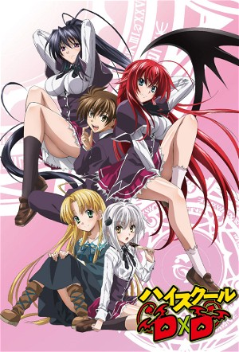

High School D×D (2012)
FantasyComedyAnimationActionAnimeRomance
| Year | 2012 |
|---|---|
| Rating | TV-MA |
| Status | Completed |
| Seasons | 5 |
| Episodes | 73 |
| Genre | Fantasy, Comedy, Animation, Action, Anime, Romance |
Hyoudou Issei, a simple-minded, lecherous second-year high school student is killed by an innocent-looking beautiful girl on his very first date. Issei is reincarnated as a devil, with the help of Rias Gremory, and so ends up as her Pawn from then on. Gremory is not only the president of the Occult Research Club, and the prettiest girl on campus, but also a high-ranking devil herself. Are Issei's days without female companionship finally over, or will life after death turn out to be a lot more complicated than he ever imagined?
Episodes
Specials
| # | Title | Air Date | Synopsis |
|---|---|---|---|
| 1 | ハーレム直前SP | 2011-12-19 | |
| 2 | 海水浴、行きます | 2012-03-21 | |
| 3 | 朱乃お姉さま、個人修行ですわ | 2012-04-25 | |
| 4 | 小猫、ちょっと大胆、、、にゃん | 2012-05-23 | |
| 5 | ドレスブレイク、誕生秘話? | 2012-06-27 | |
| 6 | うどん、作ります | 2012-07-25 | |
| 7 | アーシア、変身します | 2012-08-29 | |
| 8 | I'm Harvesting Breasts! | 2012-09-20 | The opening is the Gremory group hunting a stray devil named Maverick. After sending him to stand trial in the Underworld it's discovered that he was working in a lab developing Chimeras. The next day while Issei is wond |
| 9 | I'm Searching for Breasts! | 2013-05-21 | Issei and Asia ask Rias to observe how the others do their jobs so they can learn how to do theirs better. The two are surprised on how simple the tasks are, from playing games, to cooking, to giving a foot massage (albe |
| 10 | I'm Enveloped in Breasts! | 2015-03-10 | Asia is attacked by a monster which stole her undergarments as the Occult Research Club arrives to rescue her. Facing trouble to fight that monster due to Asia's request, they managed to destroy that monster with the hel |
| 11 | Rias and Akeno, Girl Fight!? | 2015-07-24 | Rias and Akeno try different acts of seducing Issei to "win Issei's heart". |
| 12 | 教会トリオの下着 アーメン! | 2015-08-26 | |
| 13 | 小猫の仙術治療にゃん | 2015-10-28 | |
| 14 | Levia and So ☆ | 2015-11-25 | Serafall-leviathan and her sister Sona have some family time. Only Serafall is enjoying herself. |
| 15 | The Unresurrected Phoenix | 2015-12-09 | Ravel Phenex comes to ask for the Occult Research Club's help concerning her brother, it is decided that he would learn fortitude from Issei. |
| 16 | 湯けむりグレイフィア | 2015-12-25 | |
| 17 | 実録！ ロスヴァイセ先生 | 2016-01-27 | |
| 18 | 体育館裏のホーリー | 2018-04-10 | |
| 19 | 放送記念SP 01 | 2013-06-25 | 新たな物語のスタートを記念して、 「ハイスクールＤ×Ｄ ＮＥＷ」のスペシャル番組の放送が大決定！ スペシャル番組には、 新キャラクターを演じる豪華キャストたちが出演！ 日笠陽子(リアス・グレモリー役)とともに、 「ハイスクールＤ×Ｄ ＮＥＷ」の世界を大紹介していくぞ！ |
| 20 | 放送記念SP 02 | 2013-06-25 | 新たな物語のスタートを記念して、 「ハイスクールＤ×Ｄ ＮＥＷ」のスペシャル番組の放送が大決定！ スペシャル番組には、 新キャラクターを演じる豪華キャストたちが出演！ 日笠陽子(リアス・グレモリー役)とともに、 「ハイスクールＤ×Ｄ ＮＥＷ」の世界を大紹介していくぞ！ |
| 21 | 放送記念SP 03 | 2013-06-25 | 新たな物語のスタートを記念して、 「ハイスクールＤ×Ｄ ＮＥＷ」のスペシャル番組の放送が大決定！ スペシャル番組には、 新キャラクターを演じる豪華キャストたちが出演！ 日笠陽子(リアス・グレモリー役)とともに、 「ハイスクールＤ×Ｄ ＮＥＷ」の世界を大紹介していくぞ！ |
| 22 | Broadcast Commemoration Special 04 | 2013-06-25 | To commemorate the start of a new story, it has been decided that a special program of "High School DxD NEW" will be broadcast! A gorgeous cast playing new characters will appear in the special program! Together with Yok |
| 23 | 放送記念SP 05 | 2013-06-25 | 新たな物語のスタートを記念して、 「ハイスクールＤ×Ｄ ＮＥＷ」のスペシャル番組の放送が大決定！ スペシャル番組には、 新キャラクターを演じる豪華キャストたちが出演！ 日笠陽子(リアス・グレモリー役)とともに、 「ハイスクールＤ×Ｄ ＮＥＷ」の世界を大紹介していくぞ！ |
| 24 | Broadcast Commemoration Special 06 | 2013-06-25 | To commemorate the start of a new story, it has been decided that a special program of "High School DxD NEW" will be broadcast! A gorgeous cast playing new characters will appear in "Yoko Hikasa's Voice Acting High Schoo |
Season 1
High school student Issei Hyoudou is your run-of-the-mill pervert who does nothing productive with his life, peeping on women and dreaming of having his own harem one day. Things seem to be looking up for Issei when a beautiful girl asks him out on a date, although she turns out to be a fallen angel who brutally kills him! However, he gets a second chance at life when beautiful senior student Rias Gremory, who is a top-class devil, revives him as her servant, recruiting Issei into the ranks of the school's Occult Research club.
Slowly adjusting to his new life, Issei must train and fight in order to survive in the violent world of angels and devils. Each new adventure leads to many hilarious (and risqué) moments with his new comrades, all the while keeping his new life a secret from his friends and family in High School DxD!
| # | Title | Air Date | Synopsis |
|---|---|---|---|
| 1 | I Got a Girlfriend! | 2012-01-06 | Issei Hyodo's first date with his new girlfriend ends poorly when she turns into a devil and stabs him in the stomach. Luckily, he's saved by Rias, the buxom president of his school's Occult Research Club. And then, thin |
| 2 | I'm Done Being Human! | 2012-01-13 | Issei wakes up to find that he is now a devil, and part of Rias' household. He meets the other members of the household, and learns the truth about Yuma. He is called upon to visit a solicitor who has summoned a devil, a |
| 3 | I Made a Friend! | 2012-01-20 | Issei meets and befriends a girl named Asia Argento, a Sister who has arrived to serve at the town's church. Issei learns more about the chess game in which he has become a part, and the roles that he and his fellow devi |
| 4 | I'm Saving my Friend! | 2012-01-27 | Issei is determined to get stronger. He spends some more time with Asia, but once again, their circumstances keep them apart. Issei finds out that although pawns may not be very strong, they have a power that allows them |
| 5 | I Will Defeat My Ex-girlfriend! | 2012-02-03 | While Kiba and Koneko back him up, Issei rushes in to rescue a critically injured Asia. Leaving the others behind, Raynare and Issei become engaged in a duel to the death! Elsewhere, Rias and Akeno have their hands full |
| 6 | I Work as a Devil! | 2012-02-10 | New living arrangements are made for Asia, who has been living in the club's room. Meanwhile, Issei begins a new training regimen with Rias to improve his physical fitness. Asia begins attending school, where she is plac |
| 7 | I Get a Familiar! | 2012-02-17 | Rias decides that it is time for Issei and Asia to have servant familiars. The school's student council visits the club room, and Issei learns that they are another faction of devils. The two groups compete to see who ge |
| 8 | I Pick a Fight! | 2012-02-24 | Issei dreams that he is marrying Rias, which leads him to get in touch with his inner dragon. Asia confesses a desire to have a deeper relationship with Issei. But it is Rias who appears in Issei's bedroom that night loo |
| 9 | I've Begun My Training! | 2012-03-02 | Issei begins to train in an isolated area under the watchful eyes of Rias as they prepare for the rating game as Raiser Phenex decides to hold it in ten days. |
| 10 | The Showdown Begins! | 2012-03-09 | The time for the start of the Rating Game arrives, and the contestants are transported to a battlefield in an alternate dimension. While Asia and Rias remain at their base, Issei and Koneko face the opposition, and Issei |
| 11 | The Acclaimed Battle Continues! | 2012-03-16 | The Rating Game continue where Rias's Queen is defeat. Issei's Boosted Gear with the help of Kiba's power take out the rest of Raiser's pieces. Rias forfeited to save Issei from Raiser. |
| 12 | I'm Here to Keep My Promise! | 2012-03-23 | Issei wakes up to find that the battle is over, and he has lost. Rias and the others are at a party in honor of her engagement to Riser, but with some help from Grayfia and Asia, Issei decides to crash it, rescue Rias, a |
High School DxD NEW
The misadventures of Issei Hyoudou, high school pervert and aspiring Harem King, continue on in High School DxD New. As the members of the Occult Research Club carry out their regular activities, it becomes increasingly obvious that there is something wrong with their Knight, the usually composed and alert Yuuto Kiba. Soon, Issei learns of Kiba's dark, bloody past and its connection to the mysterious Holy Swords. Once the subject of a cruel experiment, Kiba now seeks revenge on all those who wronged him.
With the return of an old enemy, as well as the appearance of two new, Holy Sword-wielding beauties, it isn't long before Issei and his Devil comrades are plunged into a twisted plot once more.
| # | Title | Air Date | Synopsis |
|---|---|---|---|
| 1 | Another Disquieting Premonition! | 2013-07-07 | Issei is back with Rias and Asia living in his house, and Kiba starts acting weird when he sees a picture of a holy sword at Issei's house. |
| 2 | The Holy Sword is Here! | 2013-07-14 | Issei gets another warning about the white dragon, and church followers bearing Holy Swords pay a visit to the devils. |
| 3 | I'll Destroy the Holy Sword! | 2013-07-21 | Issei and Kiba fight Xenovia and Irina, and Issei tries to deal with the consequences of their fight. |
| 4 | A Strong Enemy Appeared! | 2013-07-28 | Issei and the others team up with the church to fight Freed, but an even greater enemy appears. |
| 5 | Decisive Battle at Kuoh Academy! | 2013-08-04 | The Kuoh Academy students fight Kokabiel and his minions to defend their school and their town. |
| 6 | Go, Occult Research Club! | 2013-08-11 | The Occult Research Club fights Kokabiel and learns some shocking truths about the power struggle between the angels, fallen angels, and devils. |
| 7 | Summer! Bathing Suits! I'm in Trouble! | 2013-08-18 | The Occult Research Club takes over cleaning the pool to thank the student council for their help with Kokabiel, and Issei runs into a lot of trouble. |
| 8 | Open House Begins! | 2013-08-25 | Issei learns more about the feud between the Twin Sky Dragons and Rias and Sona have to deal with troublesome family members at Open House. |
| 9 | I Have a Junior! | 2013-09-01 | The other Bishop of the House of Gremory is released, and Akeno takes Issei to meet a new acquaintance. |
| 10 | Various Three-way Deadlocks! | 2013-09-08 | Issei meets Michael, the Chief of the Angels, and continues training Gasper in the days leading up to the Leaders' Summit. |
| 11 | The Leaders' Summit Begins! | 2013-09-15 | Time stops during the Leaders' Summit, and Issei and the others meet a new enemy. |
| 12 | Clash of the Twin Sky Dragons! | 2013-09-22 | Issei battles Vali and discovers hidden depths to his power as the Twin Sky Dragons face off. |
High School DxD BorN
The Red Dragon Emperor, Issei Hyoudou, and the Occult Research Club are back in action as summer break comes for the students of Kuoh Academy. After their fight with Issei’s sworn enemy, Vali and the Chaos Brigade, it is clear just how inexperienced Rias Gremory's team is. As a result, she and Azazel lead the club on an intense training regime in the Underworld to prepare them for the challenges that lie ahead.
While they slowly mature as a team, Issei will once again find himself in intimate situations with the girls of the Occult Research Club. Meanwhile, their adversaries grow stronger and more numerous as they rally their forces. And with the sudden appearance of Loki, the Evil God of Norse Mythology, the stage is set for epic fights and wickedly powerful devils in High School DxD BorN!
| # | Title | Air Date | Synopsis |
|---|---|---|---|
| 1 | Summer Break! Off to the Underworld! | 2015-04-04 | Summer break is coming up fast for Hyodo Issei, but all his plans are put on hold when he finds out he is to accompany Rias for her visit back home to the underworld! A new adventure is about to begin and all the while K |
| 2 | Young Devils Gather! | 2015-04-11 | Issei and the others begin their training to improve each of their skills. All the while things are happening around them as powerful people gather to fight against the Chaos Brigade. All the young devils gather in one p |
| 3 | Cat and Dragon! | 2015-04-18 | Koneko's sister Kuroka has appeared to take her sister away from Rias Gremory. Issei and Rias chase after her to stop that from happening. At the same time, a figure who objects to these alliances between mythologies app |
| 4 | Interception, Commence! | 2015-04-25 | Loki has been sealed away, but only temporarily. Rias and her family are among the volunteers trying to hold him back, while Odin returns North to retrieve the powerful hammer Mjolnir. Will everyone be able to stand up a |
| 5 | The Last Day of Summer Break! | 2015-05-02 | With Loki defeated, Rias and her household return to the human world to finish up their last days of summer. A pile of homework awaits Issei, but he goes on a date with Akeno instead! Akeno throws herself at Issei, hopin |
| 6 | Second Trimester has Started! | 2015-05-09 | Issei and the others are back to school and their daily lives. Irina and Rossweisse both start to live at Issei's house and the sports festival is fast approaching. During all of this, Diodora Astaroth appears before Asi |
| 7 | The Night Before Battle! | 2015-05-16 | Diodora continues to pester sweet Asia as the Rating Game approaches. Issei and the others prepare for battle as dark things brew in the background. When the Gremory household jumps to the field, they find themselves in |
| 8 | We Will Save Asia! | 2015-05-23 | Rias and her household leaves the fighting of the Chaos Brigade to the adults as they rush toward the temple to save Asia. There, Diodora replaces the Rating Game with a little game of his own. They must fight against hi |
| 9 | Dragon of Dragon | 2015-05-30 | The sudden death of Asia surprises Issei and makes him trigger Juggernaut Drive. While Rias and her household try to save him, Azazel and Sir Zechs meet the leader of the Chaos Brigade! What is her true intention for cre |
| 10 | The Occult Club Disappears?! | 2015-06-06 | Asia saves Issei by healing the dragon within him after his incomplete transformation. Finally, they all make it back home and enjoy their peaceful days. After Loki fails with Issei, he turns his evil grasp toward Rias. |
| 11 | I Will Fight! | 2015-06-13 | Issei goes to see Vali for help, which is in itself an action against the underworld. With the help of Arthur and his Holy Royal Sword Collbrande, the Rias household goes to the Dimensional Gap. There, they meet Rias and |
| 12 | Any Time, For All Time! | 2015-06-20 | Issei must stop Rias by fighting against her. As she pummels him with attacks, Issei recalls various memories that he shared with her. Unable to leave Rias in such a state, he runs forward to bring back the regal and dig |
High School DxD HERO
After rescuing his master, Rias Gremory, from the Dimensional Gap, Red Dragon Emperor and aspiring Harem King Issei Hyoudou can finally return to his high school activities alongside fellow members of the Occult Research Club: Yuuto Kiba, Asia Argento, Xenovia Quarta, and Irina Shidou. The group soon embarks on a school trip to Kyoto.
While peacefully visiting a temple thanks to Rias' spell, an attacking group of local youkai breaks the calm atmosphere. Once the altercation ends, the club learns that the mythical nine-tailed fox that protected the city was abducted and that someone has framed them for the act. Issei and his friends will now have to fight to protect the city and save their school trip from a planned disaster!
| # | Title | Air Date | Synopsis |
|---|---|---|---|
| 0 | That's Right, Let's Go to Kyoto | 2018-04-17 | Issei prepares for his school trip to Kyoto, but before he leaves, he must go with Rias and the others to the Gremory household so Rias can report the completion of her family. There, they meet Sairaorg, who requests a l |
| 1 | That's Right, Let's Go to Kyoto | 2018-04-17 | Issei prepares for his school trip to Kyoto, but before he leaves, he must go with Rias and the others to the Gremory household so Rias can report the completion of her family. There, they meet Sairaorg, who requests a l |
| 2 | School Trip, an Abrupt Attack | 2018-04-24 | Issei and his classmates arrive in Kyoto. Although Issei is ready to enjoy Kyoto to the fullest, getting stronger is s always on his mind. However, it seems training isn't the only thing to worry about in Kyoto. Powerful |
| 3 | The Party of Heroes | 2018-05-01 | Issei and the others continue their training, even while they fully enjoy themselves in Kyoto. Issei's group meets the mysterious nine-tailed fox once again and, this time, she begs them to help the youkai save her mothe |
| 4 | Showdown! Gremory Family vs. Hero Faction in Kyoto | 2018-05-08 | The Hero Faction has arrived and Cao Cao wants to cross blades with Azazel and the Red Dragon Emperor. In such a dire situation, Issei must respond quickly so all his friends make it out of this alive. Will he ever find |
| 5 | My Potential Released! | 2018-05-15 | Issei and his team meet with Cao Cao at the Nijo Castle and find Kunou's mother there. A showdown between the two factions begins. Pushed into a corner, Issei finally finds it inside himself to unleash his inner potentia |
| 6 | The School Trip is in Pandemonium | 2018-05-22 | Issei summons his beloved President into the heat of the battle in Kyoto. As she floats before him, Elsha whispers into his ear to poke her boobs. Pressing the switch releases his potential power and Issei challenges Cao |
| 7 | We Are Preparing for the School Festival! | 2018-05-29 | The Chaos Brigade has quieted down since their stunt in Kyoto so Issei and the others must now focus on other issues. After all, there are hero shows to act in, a school festival to prepare for, and the ever-looming Rati |
| 8 | A Girl's Heart is Complicated | 2018-06-05 | The Gremory family is now in full training mode for the upcoming Rating Game. However, Issei has a lot of other things on his plate. There's a school festival to prepare for and a press conference to overcome. On top of |
| 9 | The Deciding Battle of the Strongest Youth, Begins! | 2018-06-12 | The Rating Game is about to start, but Issei has things to figure out. He has formulated a guess as to why Rias is acting the way she is, but does he dare believe it? His girls give him courage. And, finally, their team |
| 10 | As a Family Member of Rias Gremory | 2018-06-19 | The competition in the Rating Game is getting heated. Can Team Gremory keep their cool and prevail, or will Issei be undone by a strip show? |
| 11 | Man Against Man | 2018-06-26 | Sairaorg has finally risen up to the stage and Kiba, Xenovia, and Rossweisse team up against him. The battle is swift and brutal and Issei is finally reaching his bursting point. Will he be able to channel his feelings? |
| 12 | Lion Heart of the School Festival | 2018-07-03 | Issei purges the curse of his Sacred Gear and stands up once again, in his form as a Queen piece. Sairaorg and Issei duke it out in one final fist fight where winner takes all. After that, the only thing he has to worry |